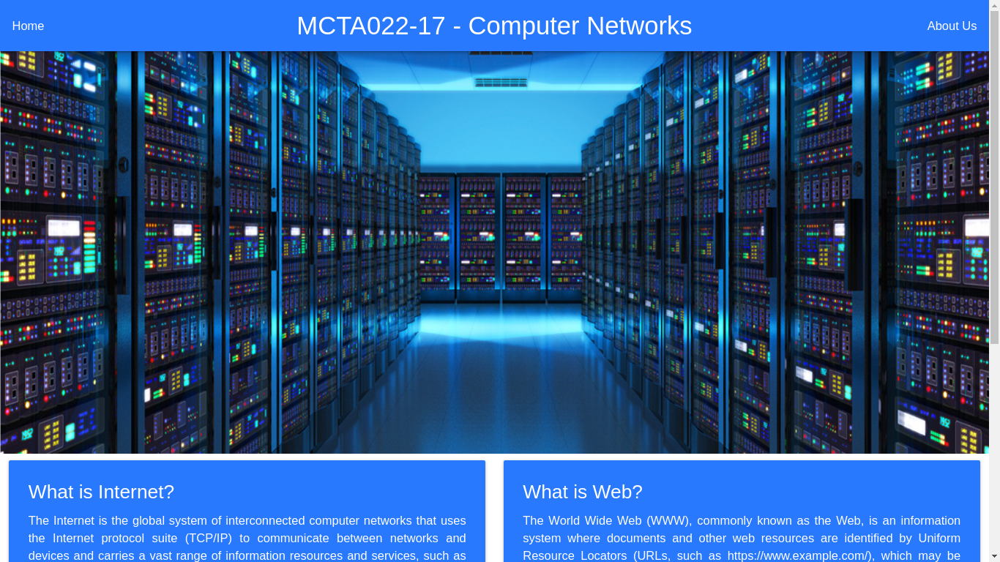

Websocket Server

This project aims to run a web server using a built-in Python library Socket. Basically. Once you run the script the server is ready to make requests. As a default, you can utilize localhost and port 6789. This web server allows multiple requests at once due to the thread library and returns all kinds of archives as HTML, MP3, PDF, etc. If you are willing to request the page in another computer network you must access your router settings and add your machine IP to receive outside requests.
GitHub Repository
RdPC
Video presentation
Web Server implementation with Socket (Portuguese)